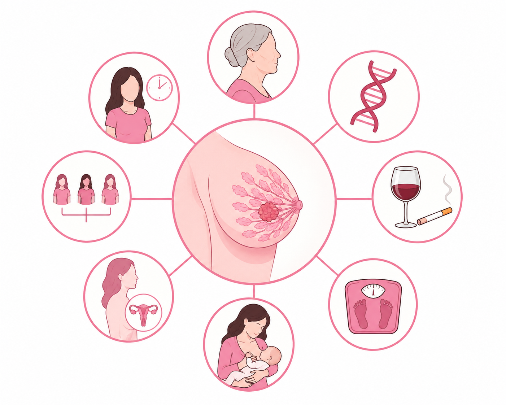
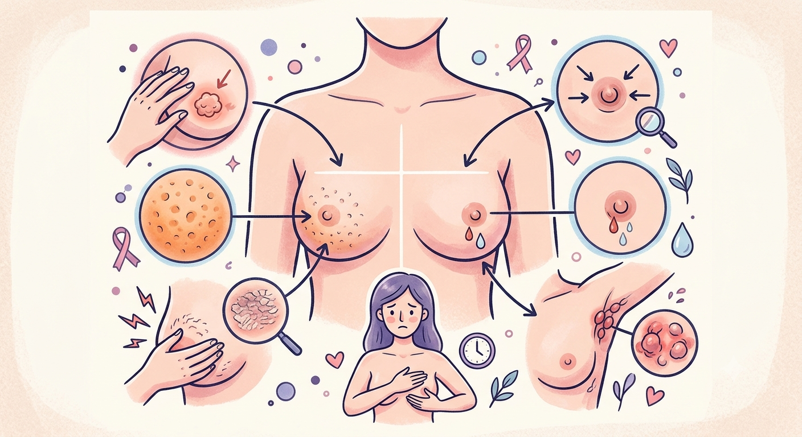
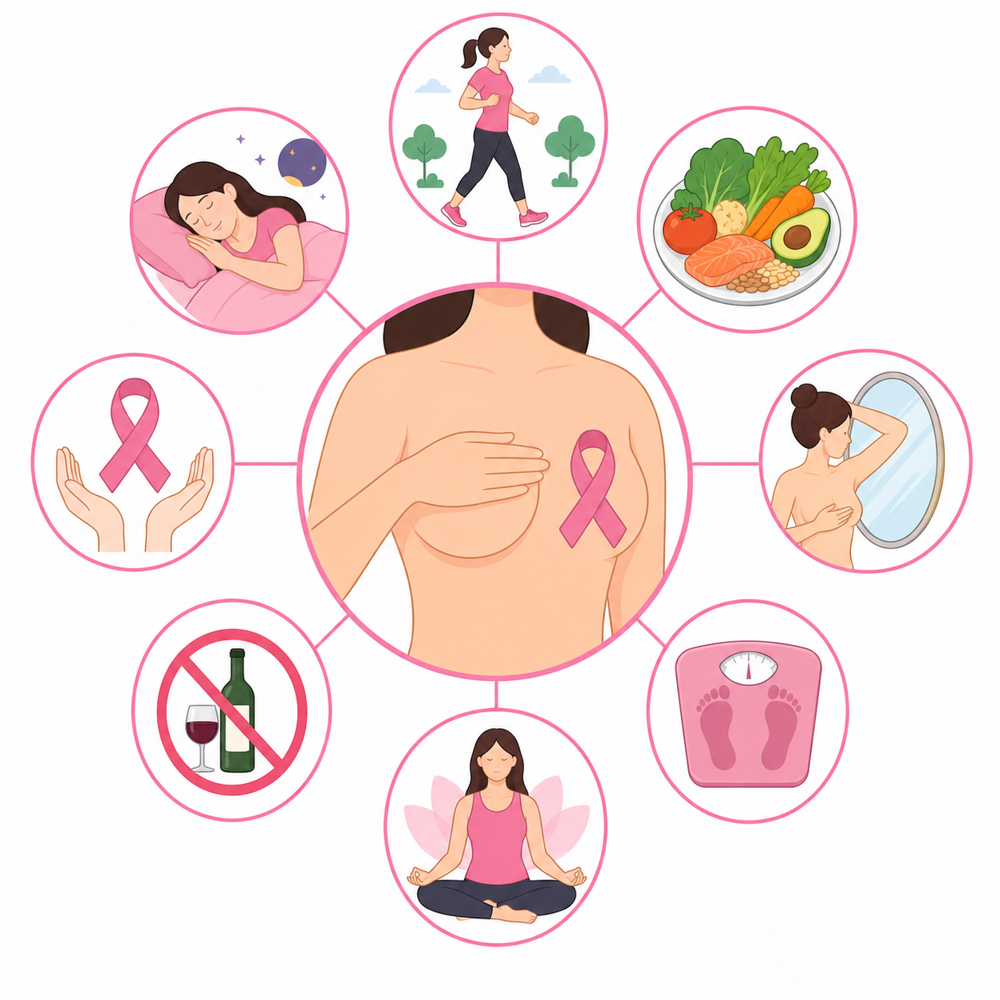
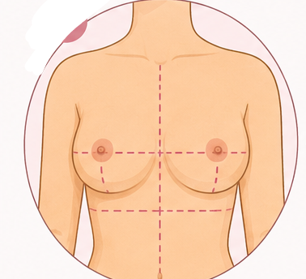
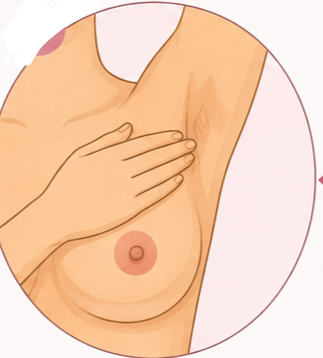
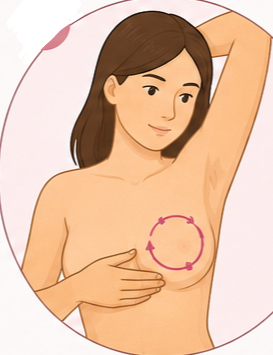

منصة رقمية صحية ذكية تهدف إلى المساهمة في الكشف المبكر عن سرطان الثدي من خلال التوعية الصحية الرقمية، وتقييم عوامل الخطر، وتوجيه النساء نحو الفحوصات المناسبة.
هو نمو غير طبيعي وخارج عن السيطرة لخلايا نسيج الثدي، ويعتبر أكثر أنواع السرطان شيوعاً بين النساء عالمياً، إلا أن الكشف المبكر عنه يحقق نسب شفاء عالية جداً.
يساهم الكشف المبكر في إنقاذ الحياة بنسبة تصل إلى أكثر من 90%. الفحص الدوري يسهل العلاج ويقلل من فترة التعافي وفرص انتشار المرض.
امرأة معرضة للإصابة عالمياً
نسبة الشفاء عند الكشف المبكر
الأكثر انتشاراً في الجزائر وعالمياً

تشمل التقدم في السن، التاريخ العائلي، الطفرات الجينية، التدخين، وعدم ممارسة النشاط البدني أو السمنة المفرطة.

ظهور كتلة أو غلظ في الثدي، تغير في شكل أو حجم الثدي، إفرازات غير طبيعية من الحلمة، أو تغير في ملمس الجلد.

اتباع نظام غذائي صحي، ممارسة الرياضة بانتظام، الرضاعة الطبيعية، تجنب الممارسات الضارة، والالتزام بالفحوصات الدورية.
قفي أمام المرآة واكتشفي أي تغيرات في الشكل، الحجم، اللون، أو وجود تجاعيد في الجلد.

ارفعي يديكِ ولاحظي إن كان هناك أي علامات لشد أو عدم تماثل بين الثديين.

باستخدام باطن الأصابع الثلاثة الوسطى، تحسسي الثدي بحركات دائرية من الخارج نحو الحلمة للبحث عن كتل.

⚠️ ملاحظة: هذا التقييم يعتبر احتمالاً فقط، والتشخيص المؤكد يكون حصراً من خلال طبيب عام أو مختص.
المستشفى الرئيسي بعاصمة الولاية، يضم مصالح طبية وجراحية هامة.
مؤسسة متخصصة في رعاية الأمومة والطفولة تقع ببلدية خنشلة.
صرح استشفائي إضافي لدعم التغطية الصحية في عاصمة الولاية.
تغطي دائرة قايس والبلديات المجاورة لها بالخدمات الجراحية والاستشفائية.
تضمن التغطية الصحية والاستعجالية للجهة الجنوبية للولاية.
تقدم الخدمات الطبية لسكان دائرة أولاد رشاش والمناطق القريبة منها.
منشأة صحية حيوية تخدم سكان المنطقة الجبلية والدائرة الغربية للولاية.
تُشرف هذه المؤسسات على العيادات متعددة الخدمات وقاعات العلاج الموزعة عبر البلديات لتقديم الرعاية الأولية:
تغطي عاصمة الولاية وضواحيها القريبة.
تُعنى بالصحة الجوارية والتلقيح في دائرة قايس.
تضمن الرعاية الأولية لسكان بلديات دائرة ششار.
تشرف على الهياكل الصحية الجوارية ببلدية المحمل والمناطق التابعة لها.
تغطي الخدمات الجوارية في دائرة بوحمامة وبلدية يابوس.
مركز رعاية صحية جوارية مخصص لجنوب الولاية والمناطق الرعوية ببلدية جلال.